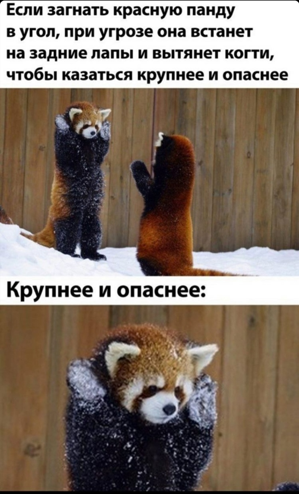

about project
about project
Ма́лая па́нда[2], коша́чий медве́дь[3] или кра́сная (рыжая) па́нда (лат. Ailurus fulgens) — млекопитающее из семейства пандовых, подотряда псообразных, отряда хищных, которое питается преимущественно растительностью; размером примерно соответствует крупным особям домашней кошки.

wowwwwwwwwww
Дом нарконфина
ekvjl'jhsklj
ekvjl'jhsklj
Это текстовое содержимое, которое находится внутри контейнера.